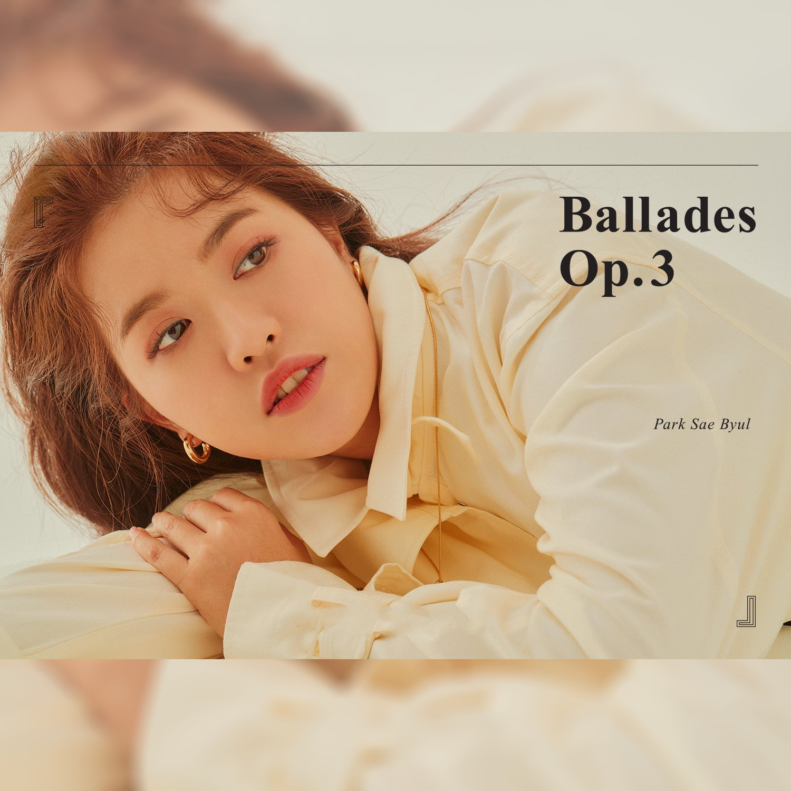
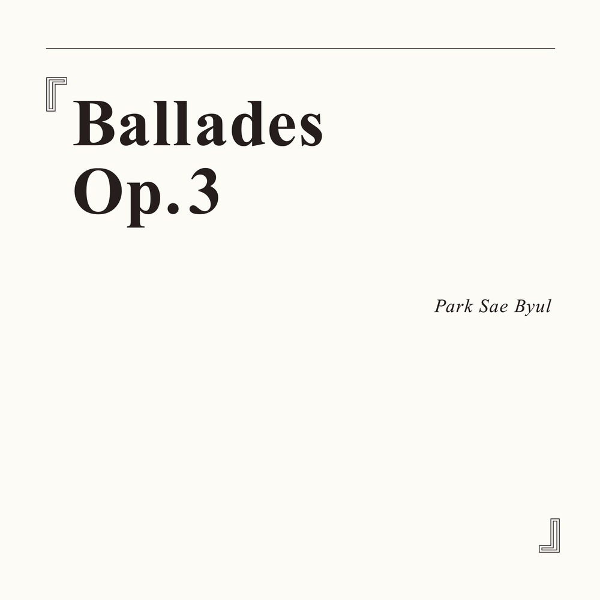
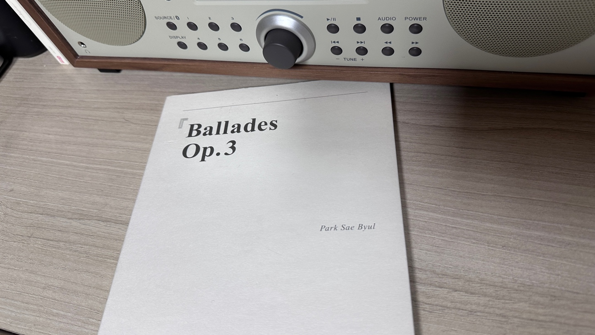
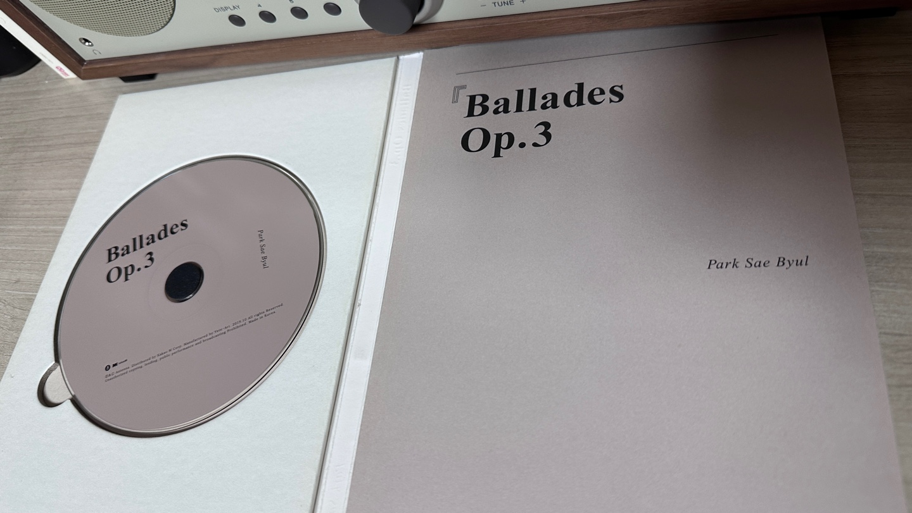
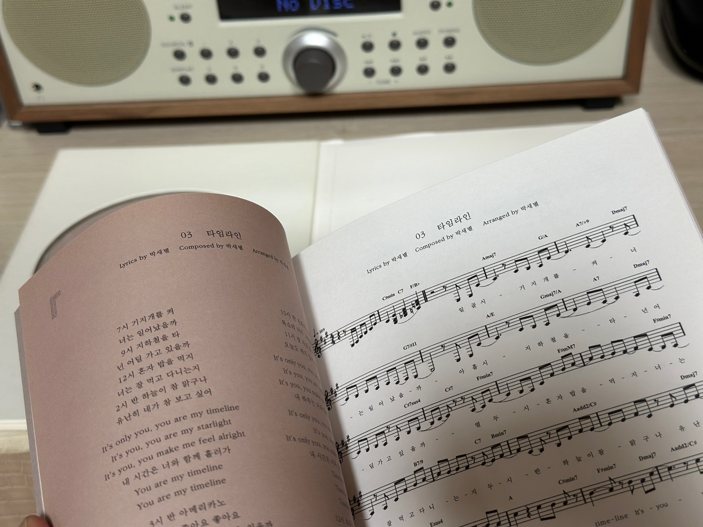

안녕하세요 라보엠입니다.
오늘은 박새별의 아름다운 노래 타임라인에 대해 소개해드리겠습니다. 타임라인은 박새별이 작사, 작곡한 곡으로, 정승환의 정규 1집 그리고 봄에 처음 수록되어 많은 사랑을 받았습니다. 이후 박새별이 자신의 3집 앨범 'Ballades Op.3'에 새롭게 편곡하여 수록했습니다. 이 앨범은 사랑, 이별, 삶이라는 세 가지 테마로 구성되어 있는데, 타임라인은 사랑을 주제로 한 첫 번째 파트에 포함되어 있습니다. 3집의 타이틀곡은 4번 트랙 잊으라 하지마이지만 저는 이 곡을 더 많이 들었습니다. 박새별만의 특별한 그루브가 담겨 있어서 더 끌렸었네요.

타임라인 노래 듣기
타임라인 노래 가사
1.
일곱 시 기지개를 켜
너는 일어났을까
아홉 시 지하철을 타
넌 어딜 가고 있을까
열두 시 혼자 밥을 먹지
너는 잘 먹고 다니는지
두 시 반 하늘이 참 맑구나
유난히 네가 참 보고 싶어
chr.
It's only you, you are my timeline
It's you, you are my starlight
It's you, you make me feel all right
내 시간은 너와 함께 흘러가
You are my timeline
You are my timeline
2.
세 시 반 아메리카노
네 사진에 좋아요 좋아요
다섯 시 배가 고프네
너는 저녁 약속 있을까
일곱 시 반 할 일은 왜 아직 많은지
너는 피곤하진 않을까
아홉 시 집에 돌아오는 길
밤하늘 속 네가 보이네
chr.
It's only you, you are my timeline
It's you, you are my starlight
It's you, you make me feel all right
내 시간은 너와 함께 흘러가
You are my timeline
You are my timeline
Br.
열 시 반 전화가 오네
목소리 너무 그리웠어
열한 시 잘 자요 내 사랑
오늘도 네가 있어 감사해
chr.
It's only you, you are my timeline
It's you, you are my starlight
It's you, you make me feel all right
내 하루는 너와 함께 변해가
It's only you, you are my timeline
It's you, starlight
It's only you, you make me feel all right
내 시간은 너와 함께 흘러가
Timeline
Timeline
Timeline
outro.
열두 시 하루가 끝났네
내일은 꼭 보면 좋겠다
타임라인의 가사는 연인의 하루 일과를 시간대별로 그려내고 있습니다. 아침 7시부터 밤 12시까지, 사랑하는 사람을 생각하는 마음을 섬세하게 표현했습니다. 이런 일상적인 내용이 오히려 많은 이들의 공감을 얻었습니다. 박새별 특유의 감성이 돋보이는 곡으로 차분하면서도 깊이 있는 목소리로 노래를 부르는 박새별의 보컬이 곡의 분위기를 한층 더 살려줍니다.

맺음말
타임라인은 미디움 템포의 팝 발라드 장르에 속하는 노래로 박새별이 직접 작사와 작곡을 맡았으며, 일상의 변화를 가져오는 순수한 사랑의 마음을 산뜻한 그루브로 표현했습니다. 타임라인은 박새별의 섬세한 감성과 음악적 재능이 잘 드러난 곡으로, 그녀의 싱어송라이터로서의 역량을 보여주고 있으며, 일상 속 사랑의 모습을 아름답게 그려냈습니다. 박새별의 섬세한 감성과 뛰어난 작사, 작곡 능력이 돋보이는 곡입니다. 여러분도 한 번 들어보시길 추천드립니다. 일상 속 소소한 사랑의 순간들을 떠올리며 감상해보세요.
  
박새별의 3집 앨범에는 악보도 담겨 있습니다.